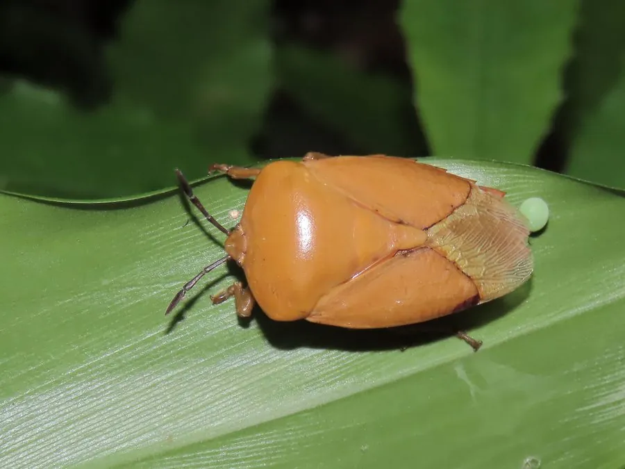

昆虫 · 动物界
荔蝽 Tessaratoma papillosa

体盾形、黄褐带细点的荔蝽，刺吸荔枝与龙眼的嫩梢花穗，遇敌喷射腐蚀性臭液，是中国华南果区的主要害虫。
- 分类
- 门节肢动物门纲昆虫纲目半翅目科荔蝽科属荔蝽属
- 栖息环境
- 荔枝、龙眼园及附近的常绿阔叶林
- 地理分布
- 中国华南与西南（广东、广西、福建、海南、云南），以及东南亚各国
- 保护级别
- 尚无保护级别；为荔枝与龙眼的主要害虫，臭液有灼伤风险
物种志
荔蝽的体长约二点四至三点一厘米，体形宽大的盾形，体色黄褐至红褐，体表密布细密的刻点，前胸背板宽阔，两侧略呈角状突出，小盾片三角形，长度超过腹部中部。它的触角细长，足粗壮，腹部腹面有臭腺开口。若虫体色橙红，体表有黑白斑纹，外形与成虫差别很大，末龄若虫翅芽明显。
它分布于中国华南和西南，包括广东、广西、福建、海南和云南，以及东南亚各国，栖息在荔枝、龙眼园及附近的常绿阔叶林，一年发生一代，以成虫在枝叶间越冬，春季恢复活动并交配产卵。成虫和若虫都用刺吸式口器吸食嫩梢、花穗和幼果的汁液，造成落花落果，是荔枝和龙眼的主要害虫。受惊时它从臭腺喷射出强酸性的臭液，沾到皮肤会引起灼痛和红肿，溅入眼睛可能损伤角膜，采果和修剪时应戴护目镜。防治以人工捕杀、生物防治和药剂为主。
形态与习性
- 体长约二点四至三点一厘米，宽大盾形
- 体色黄褐至红褐，体表密布细刻点
- 若虫橙红色带黑白斑纹，与成虫差别大
- 寄主荔枝、龙眼的嫩梢、花穗和幼果
- 防御喷射强酸性臭液，可灼伤皮肤和眼睛
- 发生世代一年一代，以成虫在枝叶间越冬
趣味知识
- 它受惊时喷出的臭液酸性很强，沾在皮肤上会留下灼痛的红斑。
- 荔枝园里春季常看到它趴在花穗上，一吸就是一片花。
- 若虫和成虫长得完全不像，橙色的小若虫常被误认成别的虫。